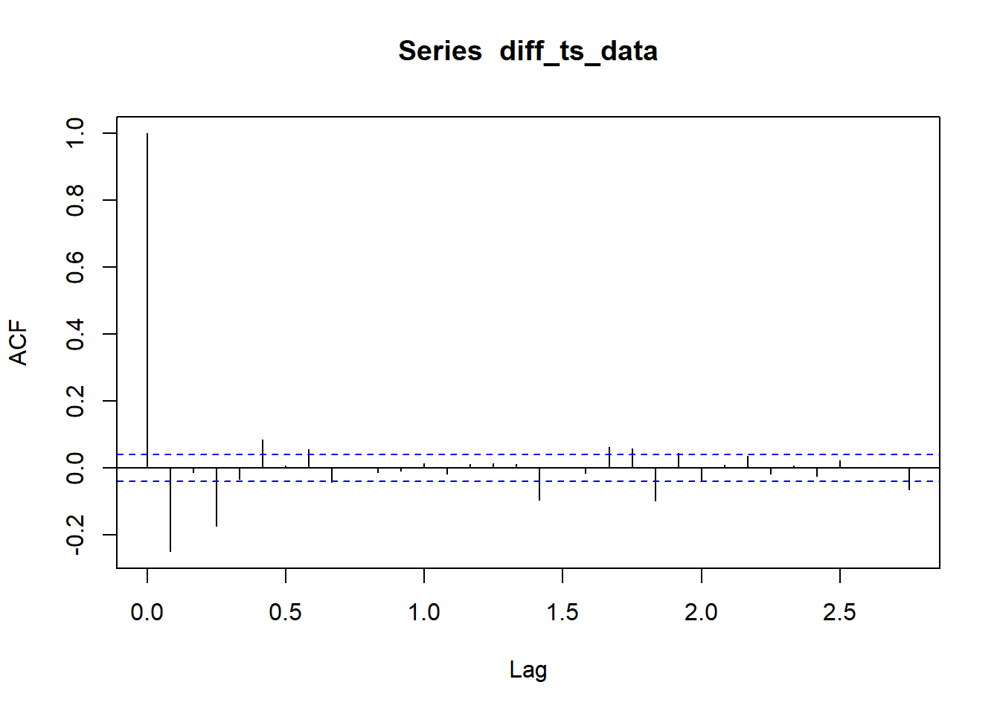

Capítulo 5 Análisis de autocorrelación y autocorrelación parcial
Diferenciación para hacer la serie estacionaria
Análisis de autocorrelación y autocorrelación parcial de la serie diferenciada

En esta sección, se realiza la identificación de modelos ARIMA siguiendo los pasos típicos de Box-Jenkins:
Análisis de autocorrelación (ACF) y autocorrelación parcial (PACF) de la serie original para identificar posibles términos autoregresivos (AR) y de media móvil (MA).
Diferenciación de la serie para hacerla estacionaria. En este caso, se aplica una diferencia de primer orden.
Análisis de ACF y PACF de la serie diferenciada para refinar la identificación de los términos ARIMA.
Selección del modelo ARIMA utilizando la función auto.arima, que encuentra automáticamente los parámetros adecuados para el modelo ARIMA.
Pronóstico utilizando el modelo ARIMA identificado.
El gráfico final muestra el pronóstico basado en el modelo ARIMA seleccionado. Este enfoque permite capturar patrones y tendencias específicas identificadas en la serie de tiempo original.
El análisis se ha enriquecido con la metodología de Box-Jenkins para mejorar la precisión de las predicciones y proporcionar una visión más completa del comportamiento de la stablecoin USDT a lo largo del tiempo.